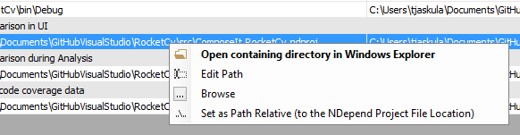
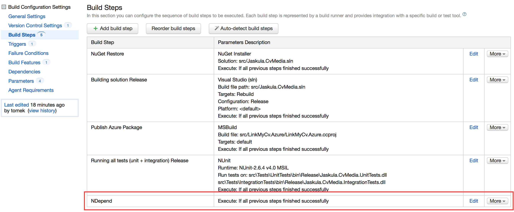
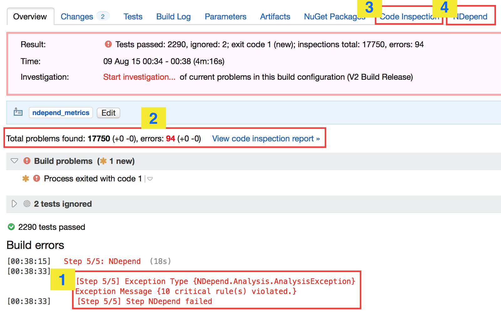
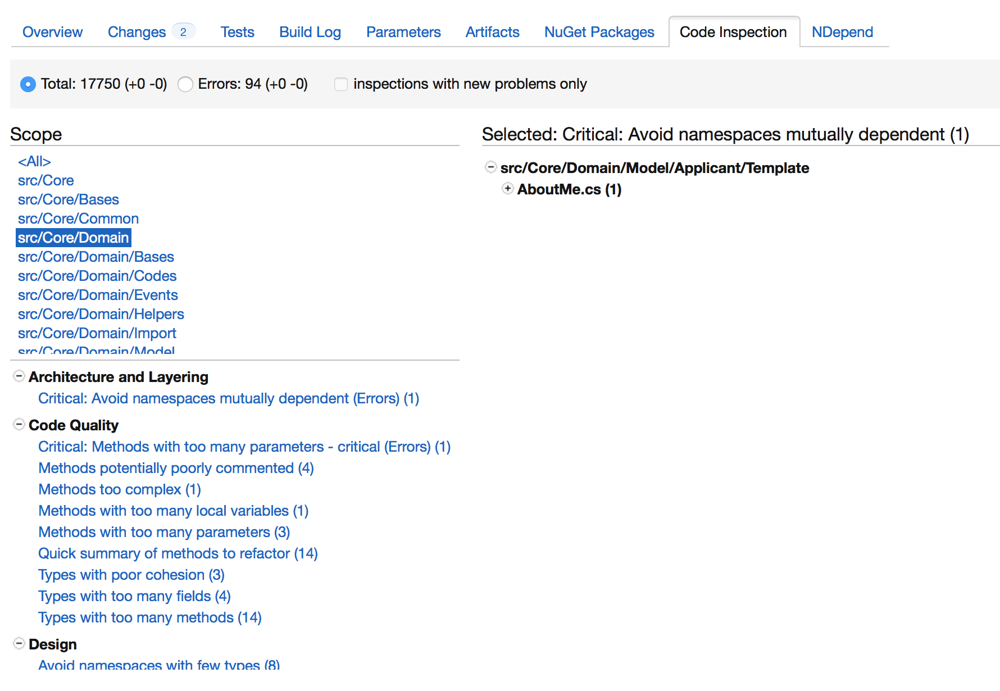
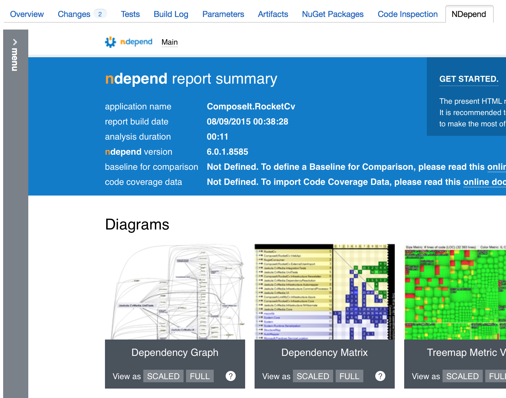
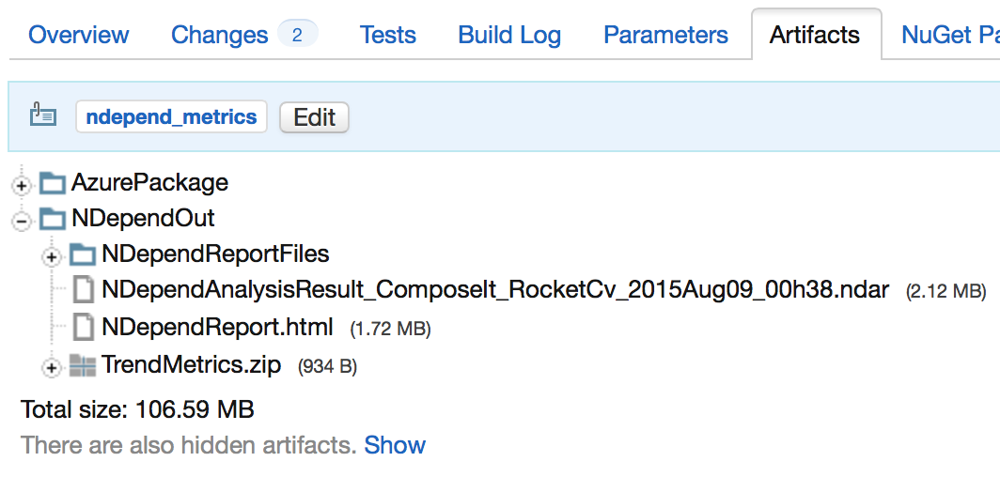
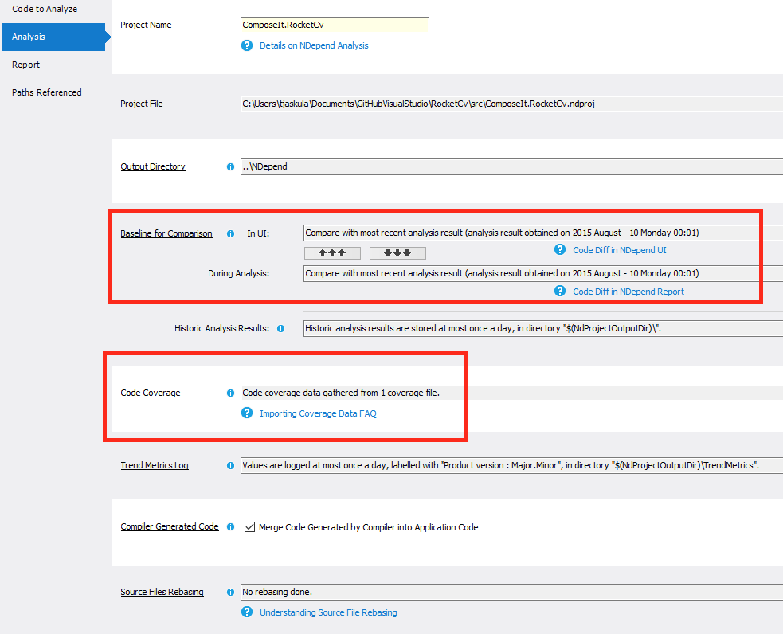
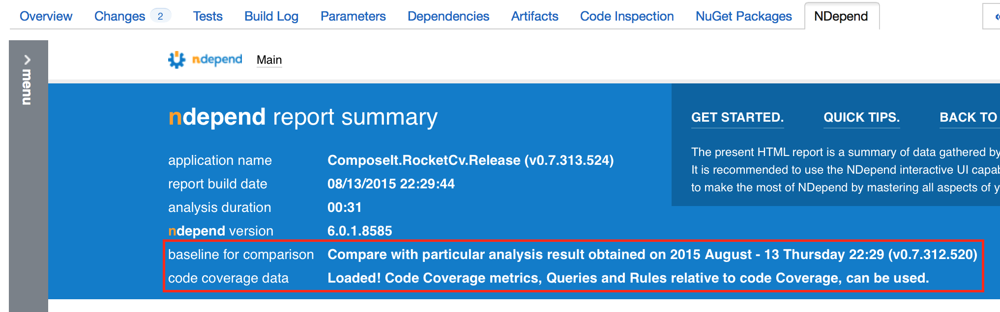
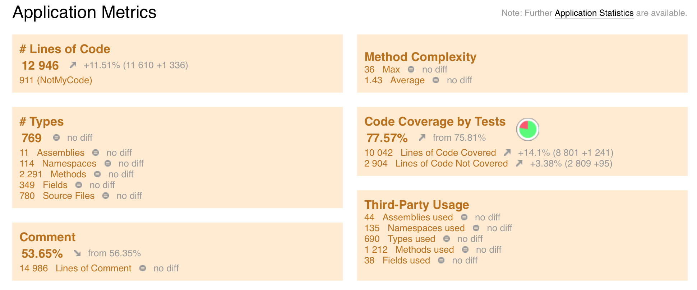

Integrating NDepend with TeamCity 9
The NDepend 6 was released a couple of weeks ago. It comes along with really exciting new features like for example Visual Studio 2015 integration, analysis enhancements, async support, etc. Take a look at NDepend website to have a full list of new features. The feature I'm interested in is the TeamCity integration which should be very easy to do according to NDepend's team.
If you use C# as your main programming language and you have already worked on a quite big project you know how painful is to enforce coding rules and to query about dependencies if you don't have right tool. NDepend is a static analysis tool that helps you digging into your code in a very easy and efficient way to carry-out code rules checks, code quality checks, comparing two versions of code base, browsing for differences and many more. This is something that you should have in your tool belt. If you're working on medium to large project you are supposed to have a build server and a sort of Continous Integration process. I'm using TeamCity 9 for my projects. It would be nice to take advantage of NDepend static code base analysis inside your CI build. It was always possible to integrate NDepend into your build process in TeamCity but it was quite tedious. NDepend 6 comes with this new shiny TeamCity plugin (for TeamCity 8 and 9) and I decided to give it a shot. Let's try it out and check if this is easier to do than before.
NDepend TeamCity plugin installation
I have followed the installation steps described at NDepend documentation so there is no need to rewrite it here. However, I'll highlight some of the differences in the process that I found on my specific environment compared to the official documentation.
First of all, finding the TeamCity plugin folder was not straightforward as my environment variable TEAMCITY_DATA_PATH was not definied. After checking the official TeamCity documentation we can read the following:
Before TeamCity 9.1, the TeamCity Windows installer configured the TeamCity data directory during installation by setting the TEAMCITY_DATA_PATH environment variable. The default path suggested for the directory is: %ALLUSERSPROFILE%\JetBrains\TeamCity.
Since TeamCity 9.1, installer does not ask for the TeamCity data directory and it can be configured on the first TeamCity start.
Obviously I have installed the TeamCity server v9.1 and I don't have the TEAMCITY_DATA_PATH set. The best way to check where your data directory is located, is to check it directly in the TeamCity web interface. Browse to Administration -> Global Settings and check the value of Data directory:. The mine is located in C:\TeamCity.BuildServer. You can now copy/paste the NDepend plugin and follow the instructions at NDepend documentation. At the end, you should be able to display NDepend step in the TeamCity server.

NDepend TeamCity plugin configuration
If you follow NDepend documentation setting up the NDepend build step is rather strightforward. Don't forget to change paths inside your NDepend project from absolute to relative. Remember that your build server may have different paths than those definied on your development machine. That's why relative paths are very handy. You can achieve it very easily, by going to your Ndepend project properties, clicking on the Paths Referenced tab and then right clicking on the listed paths and selecting Set as Path Relative option from the menu.

Once the change is done and commited, I've add NDepend build step to my build process
{kind=link}
Running the first build
We're are finaly ready to run our first build with NDepend step. The whole NDepend plugin configuration step inside TeamCity took me something like 10 min! It's really a pice of cake!
Let's check the output of the first run:
{kind=link}
- The build has failed because of NDepend exception. When the static analysis detects that critical rules are violated then the build fails. NDepend plugin maps rules violations to the TeamCity code inspections and errors. Rules violations are mapped as TeamCity code inspections and critical rules violations are mapped as errors.
- Total number of problems detected during the NDepend analysis. These are visible in the TeamCity code insepctions tab (step number 3).
- The list of code inspections as a result of NDepend analysis. You can browse through all the problems detected by NDepend. Clicking on the details of the problem it brings you directly to opened Visual Studio solution. 
- NDepend report is accessible in it's own tab! Awesome! 
{kind=link}
{kind=link}
As a bonus, NDepend output is available as a TeamCity artifact so you can download it if needed.
{kind=link}
In the Build Configuration settings, you can also set build failure upon rules and critical rules violations values. This may be usefull if you want the build fail because of the evolution of the NDepend metric change.
More NDepend features for free
Of course you don't need to work that hard to get others usefull NDepend feature for free. I'm talking about comparison of differences between two different NDepend analysis and code coverage. For the code coverage all you need to do is to configure it in the NDepend project properties. For the code comparison you have to chose a value in the NDepend build step on TeamCity for "baseline for comparison". I've selected "The last successful build" so the effect will be the comparison between the current build and the last successful one. You have to set also the right value in the NDepend project properties like below:
{kind=link}
Once it's done, you run the build and check the build output. You should see baseline for comparison and code coverage picked up by the build like on the picture below:
{kind=link}
You should also see on the NDepend tab, the code metrics of the current build (brown letters) and how it compares to the previous analysis (grey letters).
{kind=link}
Summary
What to say? The NDepend plugin is just so easy to install compared to the manual process I had to do with the previous versions. This is a really nice feature to have on your CI server. TeamCity NDepend plugin test: PASSED!